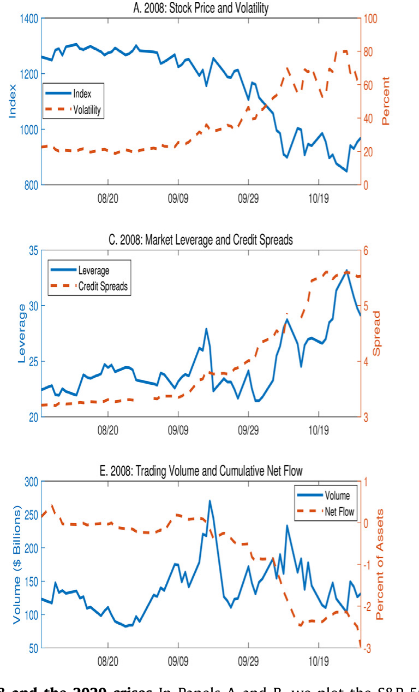
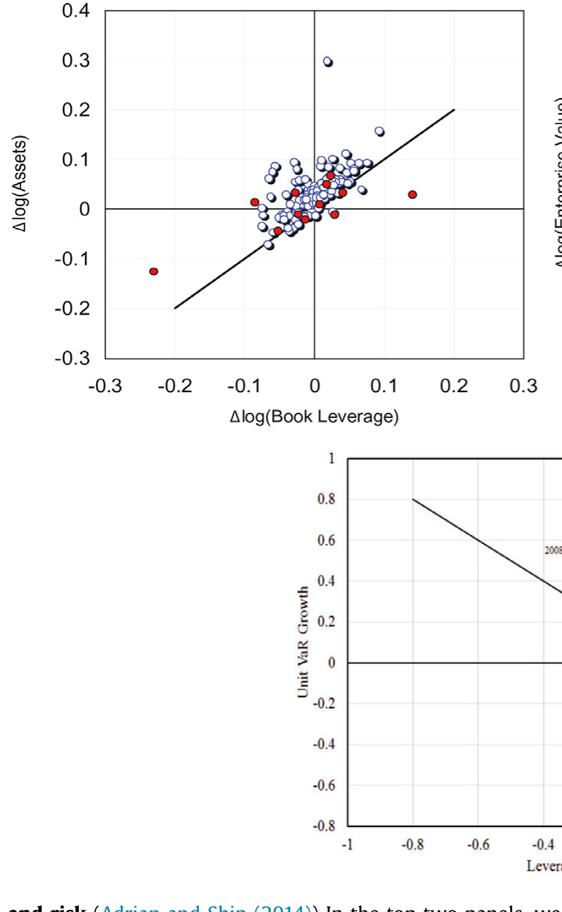
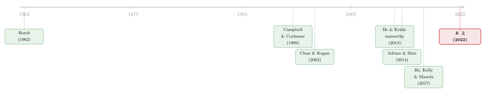
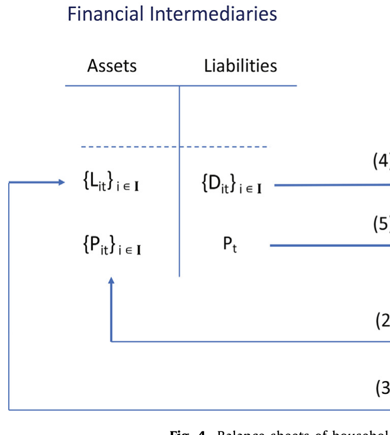
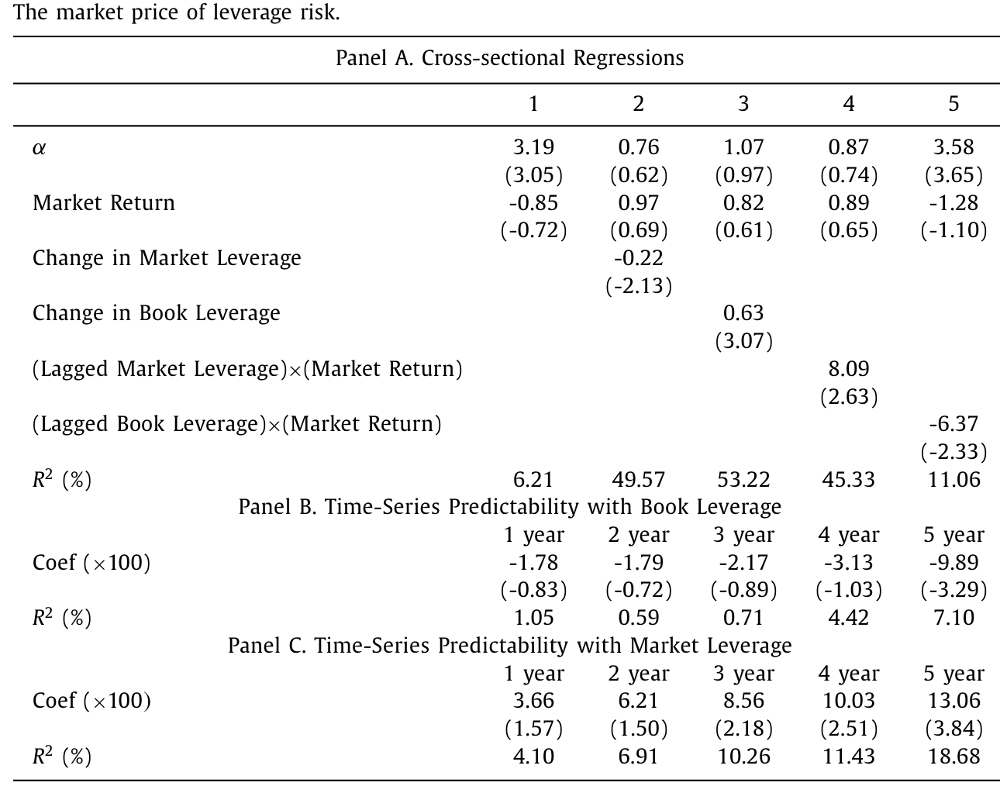
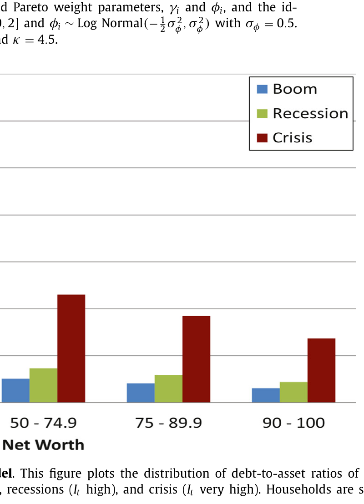

杠杆是「果」，不是「因」：一个没有摩擦的危机故事
本文读的是 Santos & Veronesi (2022, JFE)：作者用一个完全没有摩擦的一般均衡模型证明，金融中介的杠杆——以及围绕它衍生出来的一整套资产定价「事实」——并不是危机的原因，而是家庭部门异质且随周期变动的风险厌恶投在资产负债表上的影子。中介的资产负债表之所以能预测股票收益、与信用利差反向、在繁荣期预示低回报，并不是因为它「驱动」了市场，而仅仅因为它是这个不易观测的总体风险厌恶的一个好用的代理变量。
1 引言：两次几乎一模一样的危机
先看一张图。把 2008 年金融危机和 2020 年新冠危机的几条曲线并排放在一起：标普 500 暴跌、VIX 飙升、信用利差走阔、共同基金大规模净流出、交易量激增、金融中介的市场杠杆 (market leverage) 抬头——你会发现，这两场危机在数据上几乎无法区分。

Figure 1: The 2008 and the 2020 crises In Panels A and B, we plot the S&P
可问题来了。2008 年那场危机，主流叙事说得很清楚：是中介过度加杠杆、随后被迫去杠杆 (deleveraging) 把整个系统拖下了水——杠杆是病因。可 2020 年呢？那是一场病毒大流行，中介的杠杆显然不可能是那场崩盘的「近因」。
于是一个让人不太舒服的念头浮上来：如果有没有「杠杆驱动危机」这回事，资产负债表上呈现出来的形态都一模一样——那我们凭什么断定，2008 年的杠杆就是「因」？会不会，它从头到尾都只是一个症状？
这正是 Santos 和 Veronesi 想说的。他们的主张近乎挑衅：中介杠杆的所有这些「神奇」表现，都可以在一个连一丝摩擦都没有、连一点因果链条都没有的理性模型里复现出来。
2 一个被「反着读」的文献
要理解这篇论文的位置，得先看清它在跟谁对话。
2008 年之后，宏观金融文献的主线是这样讲故事的：金融中介是市场的「边际投资者」(marginal agent)，它们的借贷活动、它们受到的约束（比如在险价值约束）、它们的行为偏差，直接定价了资产（He 和 Krishnamurthy, 2013）。沿着这条线，人们陆续发现了三组很扎实的经验规律：
第一，Adrian 和 Shin (2014) 指出，中介杠杆受类似在险价值 (value-at-risk, VaR) 的约束驱动——VaR 上升、杠杆下降。一个看似矛盾的事实是：账面杠杆 (book leverage) 是顺周期的，市场杠杆却是逆周期的。

Figure 3: Leverage and risk ( Adrian and Shin (2014) ) In the top two panels, we
第二，Adrian、Etula 和 Muir（AEM, 2014）以及 He、Kelly 和 Manela（HKM, 2017）发现，中介杠杆是一个被定价的因子：把它放进 Fama-French 25 个规模/账面市值组合的横截面里，解释力惊人。
第三，Baron 和 Xiong (2017)、Muir (2019) 发现，信用扩张往往伴随着低信用利差、更低的未来股票收益，以及负偏的未来收益分布——繁荣期里，市场崩盘反而比暴涨更可能发生。
这些事实，几乎都被当成「中介驱动论」的证据。而 Santos 和 Veronesi 做的事情，是把这一整套证据反着读了一遍。

他们的思想根子，其实埋在更老的一支文献里：从 Borch (1962) 开始的最优风险分担理论，到 Dumas (1989)、Wang (1996)、Longstaff 和 Wang (2012) 这些「两类异质 agent」的均衡模型，再到 Chan 和 Kogan (2002) 把异质风险厌恶塞进习惯模型。这些前辈的共同短板是：agent 的风险厌恶要么是常数，要么彼此异质但不随周期动。而 Santos 和 Veronesi 自己早年的工作（Santos 和 Veronesi, 2010）已经把习惯偏好和股票横截面连了起来。这一次，他们补上了最关键的一块拼图——让风险厌恶的异质性本身随商业周期摆动。
3 模型：把「风险厌恶」做成可以摆动的弹簧
这是一篇模型论文，核心机制全在设定里，所以值得一步步拆开看。
经济体是一个连续时间、单一消费品的禀赋经济 (endowment economy)，里面住着一个连续统的家庭，用 \(i\) 标记。每个家庭的偏好带外部习惯 (external habit)：
$$ u(C_{it};\,\psi_{it},\,Y_t,\,t) = e^{-\rho t}\,\log\!\left(C_{it} - \psi_{it}\,Y_t\right). $$
效用来自个人消费 \(C_{it}\) 与一个「习惯水平」\(\psi_{it}Y_t\) 之间的距离——这就是 Campbell 和 Cochrane (1999) 那套总量习惯模型的微观版本。距离越近，边际效用越陡，人就越「怕」损失。
总产出 \(Y_t\) 服从几何布朗运动，但它的波动率不是常数，而是取决于一个状态变量 \(I_t\)：
$$ \frac{dY_t}{Y_t} = \mu_Y\,dt + \sigma_Y(I_t)\,dZ_t. $$
这个 \(I_t\) 是全文的发动机——一个「衰退指示器」。它服从一个均值回复过程：
$$ dI_t = k\,(\bar I - I_t)\,dt - v\,I_t\left(\frac{dY_t}{Y_t} - \mu_Y\,dt\right). $$
读懂这个式子，就读懂了大半篇论文：当出现一个坏的总量冲击（\(dY_t/Y_t < \mu_Y\,dt\)）时，等号右边第二项为正，\(I_t\) 被顶高——经济进入衰退；之后它又以速度 \(k\) 慢慢回落到中枢 \(\bar I\)。\(k\) 衡量的，正是繁荣与衰退的平均长度。
但真正关键的一步，是习惯强度 \(\psi_{it}\) 怎么写。作者给了它一个精心设计的函数形式：
这一个方程，就是整篇论文「关键的新成分」。它把两件事乘在了一起：横截面的异质（\(\gamma_i\)）和时序的周期波动（\(I_t\)）。
它带来的后果，藏在局部风险厌恶 (local risk aversion, LRA) 里。对这个对数习惯效用求一下，局部相对风险厌恶等于
$$ \text{LRA}_{it} = \frac{C_{it}}{C_{it} - \psi_{it}\,Y_t}. $$
因为消费份额始终满足 \(C_{it}/Y_t > \psi_{it}\)，所以每个家庭的 LRA 都严格大于 1（也就是严格比对数效用更怕风险）。更要紧的是：\(\psi_{it}\) 在 \(\gamma_i\) 和 \(I_t\) 上都是递增的——于是 \(\gamma_i\) 高的家庭天生更厌恶风险，而所有人的风险厌恶都在衰退（\(I_t\) 高）时上升，只是上升幅度各不相同。
到这里，那根「弹簧」就装好了：风险厌恶既有人与人之间的高低差，又会随着经济好坏整体伸缩。
4 杠杆是怎么「长」出来的
接着，一个自然的问题是：这跟金融中介的资产负债表有什么关系？
答案是——中介的资产负债表，继承自家庭部门的资产负债表。模型里有一个代表性金融中介，它做两件事：第一，把家庭各自禀赋上的特质风险 (idiosyncratic risk) 池化掉，发行总产出的份额；第二，开一个货币市场账户，让家庭自由借贷。它就像一只「ETF 捆绑一个货币市场账户」。

Figure 4: Balance sheets of households
但中介有个约束：它只有在有人愿意借钱、从而产生能为其负债背书的资产时，才能发行那些安全的短期存款。于是故事的两端清晰起来——
风险容忍 (risk-tolerant, RT) 的家庭（低 \(\gamma_i\)）愿意加杠杆 \(L_{i,t} > 0\)，他们提供的债务，正是中介负债的「资产端」；风险厌恶 (risk-averse, RA) 的家庭（高 \(\gamma_i\)）则去存钱 \(D_{i,t} > 0\)。每个家庭的净值是：
$$ W_{i,t} = \begin{cases} N_{i,t}P_t - L_{i,t}, & \text{for the RT household},\\[4pt] N_{i,t}P_t + D_{i,t}, & \text{for the RA household}. \end{cases} $$
现在把弹簧松开。繁荣期，\(I_t\) 低，风险容忍的家庭变得更敢冒险，借得更多；为了满足这股借贷需求，中介的资产负债表必须扩张——债务顺周期。而且作者强调，借款家庭的债务增长会快于收入增长，因为风险容忍上升给了借贷一个「额外的踹一脚」(additional kick)。衰退期，溢价和波动率上升，风险容忍的家庭去杠杆，中介资产负债表收缩。
于是顺周期的账面杠杆、逆周期的市场杠杆——这对让无数模型头疼的「矛盾」——在这里被同一个机制自然地调和了：市场杠杆的逆周期，来自时变的贴现率效应。坏时候风险厌恶上升，把权益的市值打下去（分母变小），即便债务在减少，债务/权益比反而上升。账面杠杆看不到这个贴现率冲击，所以仍是顺周期。
这里的「贴现率随风险厌恶呼吸」是全文的暗线。关于贴现率为什么是资产定价的中心议题，可参见《贴现率：资产定价的中心议题》；关于市场化的家庭杠杆如何与信用周期纠缠，亦可对照《华尔街的亏损，怎样涨了你家的房贷——一张「信用曲面」的故事》。
5 主要结果：一个「代理变量」能走多远
模型搭好了，真正的检验是：它能不能复现前面那三组经验事实？
横截面定价。 作者用 AEM 和 HKM 同样的数据，对 25 个 Fama-French 组合做 Fama-MacBeth 回归。如表 1 的 Panel A 所示：CAPM 的 \(R^2\) 只有可怜的 6.21%，alpha 高达 3.19（t = 3.05）。一旦换上 HKM 的市场杠杆因子，\(R^2\) 跳到 49.57%，alpha 归零，市场杠杆的风险价格为负且显著（系数 -0.22，t = -2.13）；换成 AEM 的账面杠杆，\(R^2\) 是 53.22%，但风险价格变成了正（系数 0.63，t = 3.07）。

Table 1
注意这两个相反的符号。在「中介驱动论」里，这是个尴尬的争议。而 Santos 和 Veronesi 的模型恰恰预测了这种符号反转：杠杆风险的价格是正是负，取决于债务是被某个缓慢移动的收入指标标准化（→ 账面杠杆），还是被吸收了贴现率冲击的中介权益标准化（→ 市场杠杆）。
时序预测。 Panel B 和 C 是横截面的时序对应版。账面杠杆对未来收益只有微弱且为负的预测力（5 年期系数 -9.89，t = -3.29）；而市场杠杆的预测力更强、且为正——高市场杠杆预示更高的未来收益（5 年期系数 13.06，t = 3.84，\(R^2 = 18.68\%\)）。模型同样复现了「市场杠杆比账面杠杆更会预测」这一稳健发现。
家庭杠杆的横截面。 模型还能匹配两个特征：净值越低的家庭，债务/净值比越高；2008 危机中债务/资产比上升，尤以低分位家庭为甚。

Figure 2: . In contrast, in our model the two different sources
但作者很诚实地承认了模型的边界：它只能解释低财富家庭实际杠杆的大约一半，在水平值上明显「不够」；它生成的财富不平等也远不及数据里的极端程度。换句话说，风险态度的周期波动是个重要但不充分的解释变量——其他因素必须被请进来补足差额（作者在第 5 节用一个加入特质风险厌恶冲击的扩展来逼近这个差距）。
信用周期与偏度。 最后，模型还顺手解释了 Baron 和 Xiong (2017)、Muir (2019) 的发现：繁荣期风险厌恶处于最低位，负的产出冲击会双重打击价格——直接通过更低的产出，间接通过风险厌恶的回升。这「double kick」使得好时候出现大跌的概率，反而高于坏时候，从而生成了数据里观察到的负偏收益。
6 评论与延伸（Q&A + 研究方向）
(a) 几个可能的疑问
Q：「中介杠杆没有因果作用」这个结论，是不是太强了？
要小心理解它的边界。作者并不是说金融摩擦在现实中不存在，而是做了一个更克制的论证：你能在一个零摩擦经济里复现全部这些经验规律，因此这些规律本身不能作为「摩擦驱动」或「中介因果」的证据。这是一个「观察等价」(observational equivalence) 式的警告，而非对摩擦的否定。
Q：那这个模型和「中介驱动论」到底怎么区分？
难就难在这里——在很多维度上它们观察等价。作者自己也承认，要判断金融中介渠道的定量重要性，必须同时把这些贴现率冲击纳进来。真正能区分的，可能是那些只有「因果论」才预测、而「代理论」不预测的实验（比如对中介资本的外生冲击），但模型本身不提供这样的检验。
Q：把风险厌恶的时变性建成「外部习惯」，会不会只是把假设藏进了函数形式里？
是个合理的担忧。\(\psi_i(I_t) = \gamma_i\sqrt{1 - I_t^{-1}}\) 这个形式是为了求出闭式解而精心挑的。好处是干净、可计算；代价是结论对这个特定设定有多敏感，文中难以完全打消。不过作者引用了 Guiso 等 (2018)、Cohn 等 (2015)、Bricker 等 (2015) 的经验/实验证据，说明逆周期且异质的风险厌恶在数据里确有其事，这给函数形式提供了一些底气。
Q：为什么是 \(\gamma_i\) 低的家庭去借钱？直觉上「胆大」的人加杠杆是对的吗？
对。\(\psi_{it}\) 在 \(\gamma_i\) 上递增，而高 \(\psi_{it}\) 意味着高 LRA，所以高 \(\gamma_i\) = 更怕风险 = 储蓄者，低 \(\gamma_i\) = 风险容忍 = 借款人。这与「风险容忍者加杠杆、买入更多市场风险敞口」的直觉一致。
Q：模型只能解释低财富家庭杠杆的一半，这算不算「失败」？
不算失败，算诚实。作者明确把这当成一个信息：风险态度波动是真实的驱动力，但不足以独力解释家庭杠杆的全部水平——这反而划清了这一机制的适用边界，比硬凑出 100% 的拟合更有价值。
Q：那 2020 年那张图，到底证明了什么？
它是个绝妙的「反事实」。2020 的危机里中介杠杆显然不是近因，但数据形态与 2008 难分彼此——这恰好说明，这些形态本身不能反推出因果。它是全文叙事的「锚」，而非正式的识别。
(b) 几个可能的研究问题与提案
1. 把「资产负债表 = 风险厌恶代理」搬到公司债市场。 【经济故事】既然中介杠杆只是总体风险厌恶的影子，那么在信用市场，中介杠杆对公司债超额收益与信用利差的预测力，是否会被直接的风险厌恶度量（如 Guiso 等的调查、消费者信心指标）所吸收？若能被吸收，则支持「代理论」。 【可行性】中。需要 TRACE 公司债收益、HKM 中介杠杆序列，以及一个外生的风险厌恶代理；识别靠「加入风险厌恶后中介因子是否失去显著性」的横向比较，干净度中等。
2. 外资持有人作为风险容忍异质性的「外生」来源。 【经济故事】模型里风险容忍的异质性是给定的。但现实中，美国公司债市场的外资持有人，其风险态度受本国周期驱动，对美国而言近乎外生。当外资风险容忍收缩时，美国公司债的杠杆需求与流动性是否随之波动？这给「异质风险态度→中介资产负债表」的链条提供了一个准外生推手。 【可行性】中。需 TIC/Flow of Funds 的外资持有数据 + 公司债流动性度量；识别可借助本国冲击作为工具变量。与既有的外资—债券流动性研究天然衔接。
3. 用信用登记/SCF 面板检验「低财富 = 高债务/净值」与那道「一半」的缺口。 【经济故事】模型预测沿财富分布的债务/资产比单调递减，且只能解释一半。把这道缺口拆开——剩下的一半到底是抵押约束、消费承诺，还是别的？ 【可行性】高。SCF 2007/2009 面板（同一批家庭）已被本文使用，征信局数据可进一步细分；纯描述性 + 分解，doable。
4. 信用扩张的「负偏」机制能否被风险厌恶通道直接量出来。 【经济故事】Baron-Xiong 的负偏来自「double kick」。能否在期权隐含偏度数据里，把这两脚（产出 vs. 风险厌恶）分离开？ 【可行性】中。需信用/产出比、个股与指数期权隐含偏度；识别靠把隐含偏度对风险厌恶代理与产出冲击分别投影，分离度有限但值得一试。
7 我的判断
这篇论文最漂亮的地方，是它的克制。它没有去否认金融摩擦，而是把举证责任反推了回去：你拿出来当「中介因果」证据的那些事实，我用一个连摩擦都没有的模型全给你复现出来了——所以请你重新想想，这些事实到底证明了什么。把账面杠杆与市场杠杆的符号矛盾、把信用周期的负偏、把横截面与时序的双重可预测性，统统收进同一个「时变异质风险厌恶」的机制里，是相当优雅的统一。
对识别，我最大的保留有两点。其一，全文是校准而非估计，结论的可信度高度依赖 \(\psi_i(I_t)\) 那个为闭式解服务的函数形式，作者也坦承只能解释低财富杠杆的一半——这意味着「风险厌恶」远不是故事的全部。其二，「观察等价」是把双刃剑：它削弱了对手的证据，却也削弱了自己的——既然两套理论在数据上难分彼此，模型本身就无法提供一个能把它和「中介因果论」干净掰开的检验。
后续我最想看到的，是有人拿一个真正外生的中介资本冲击（或本文提议的外资风险态度冲击），去寻找那个「只有因果论预测、代理论不预测」的裂缝。在那之前，这篇论文留给我们的，是一句值得反复咀嚼的告诫：当你在资产负债表上看到杠杆在动时，先别急着说它是因——它很可能只是那个你看不见的、整个经济体的风险厌恶，投下的一道影子。
参考文献
- Adrian, T., Etula, E., Muir, T. (2014). Financial intermediaries and the cross-section of asset returns. Journal of Finance 69(6), 2557–2596.
- Adrian, T., Shin, H. (2014). Procyclical leverage and value-at-risk. Review of Financial Studies 27(2), 373–403.
- Baron, M., Xiong, W. (2017). Credit expansion and neglected crash risk. Quarterly Journal of Economics 132(2), 713–764.
- Borch, K.H. (1962). Equilibrium in a reinsurance market. Econometrica 30, 424–444.
- Campbell, J.Y., Cochrane, J. (1999). By force of habit: a consumption-based explanation of aggregate stock market behavior. Journal of Political Economy 107, 205–251.
- Chan, Y.L., Kogan, L. (2002). Catching up with the Joneses: heterogeneous preferences and the dynamics of asset prices. Journal of Political Economy 110(6), 1255–1285.
- Guiso, L., Sapienza, P., Zingales, L. (2018). Time varying risk aversion. Journal of Financial Economics 128(3), 403–421.
- He, Z., Kelly, B., Manela, A. (2017). Intermediary asset pricing: new evidence from many asset classes. Journal of Financial Economics 126(1), 1–35.
- He, Z., Krishnamurthy, A. (2013). Intermediary asset pricing. American Economic Review 103(2), 723–770.
- Geanakoplos, J. (2010). The leverage cycle. NBER Macroeconomics Annual v29.
- Muir, T. (2019). Is risk mispriced in credit booms? Working paper.
- Santos, T., Veronesi, P. (2010). Habit formation, the cross-section of stock returns, and the cash flow risk puzzle. Journal of Financial Economics 98(2), 385–413.
- Santos, T., Veronesi, P. (2022). Leverage. Journal of Financial Economics 145(2), 362–386.